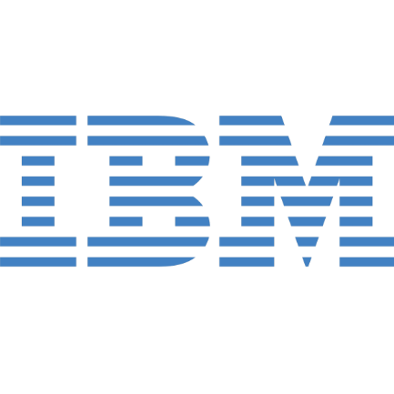
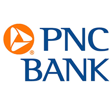

Here are the resumes of actual UR students who got internships during their college career. Hopefully, it'll provide some insight into how they got their internships because you'll be able to view their resume from before their internship (the resume they submitted) and their resume after their internship. Below, we have provided as much information we can about the student to the extent they were comfortable with.
Internship at
Data Directions, Inc.
Internship at
Goldman Sachs
Internship at
Goldman Sachs
Internship at

IBM + Amazon
Internship at
MathWorks
Internship at

PNC Bank
Internship at
Timmons Group
Internship at
Google
Career Advice: Buffing Your Resume and Networking
If you want a job at a top technical company, displaying your interest outside of class is crucial! Below, you'll find a list of things you can do to strengthen your position in the job market. Even if you are not aiming for a top technical company, doing the things below will considerably boost your chances of securing an interview.
Projects
Projects are really important and are a great way of demonstrating your interest outside of class. It may be daunting to start on a project if you feel like you don't know how to do anything, so just giving it a try and doing your own research is very important in the process. You most likely won't build anything magnificent the first time you learn something from scratch, but the point is to learn. So even if you start by developing a simple calculator app to learn iOS development, that's a great way to start. Doing an independent study is an option to get a substantial project on your resume if you're struggling for units. If you would like to do projects with other people, doing them through ACM is a great way to start.
Hackathons
Hackathons are also a great way to show you have interest outside of your classes. You can also put your hackathon projects on your resume, and people are known to get jobs and internships from hackathons. In order to see a list of hackathons coming up, go to mlh.io. ACM also organizes an annual SpiderHacks hackathon that you can attend!
Open Source Projects
Open source projects are something that seem to be mentioned over and over again. If you contribute to open source projects, that can be a testament to your programming ability and debugging. Starting on an open source project can be daunting, so researching resources for first timers like https://www.firsttimersonly.com/ can be useful.
Programming Competitions
The ACM programming competition and other programming competitions is also a good way to get your feet wet with CS activities outside of class. If you're serious about wanting to do well at the ACM programming competition, be sure to join Dr. Prateek Bhakta's 0.25 credit ACM prep class!
Research
Research is a good way to get experience on your resume, especially in your early years. Since UR has the UR Guarantee where you are guaranteed a summer of $3,000, definitely take advantage of this in your early years! If you are someone going to industry instead of grad school, internships seem to be preferred but research is certainly not a bad thing to have on your resume. A common question is how to actually secure a research position with a professor, and that involves asking early enough that they didn't fill all the space in their lab and knocking on a professor's door, even one you don't know, and asking if they'd consider you.
Internships
This may seem a little preposterous that this is something about buffing your resume because it's exactly what you're most likely trying to do. However, this point is here to say that it's never to early to apply to internships and there are many places that will accept sophomores and freshman. Applying to a lot of places is important, though. But having one internship on your resume is an excellent stepping stone to getting a better one!
Jobs/Extracurriculars/Everything Else
Jobs such as tutoring or being a lab assistant can boost your resume because it shows you can communicate what you know to people. Extracurriculars such as being active in your *cough* ACM chapter *cough* would also boost your resume. Truth is, a lot of things can boost your resume, all that needs to show is that you have a passion for CS.
HOWEVER...
be aware that technical skills are not all that matter to a person. Communication, being able to work in a team, getting along with others is just as crucial as your technical skills. Because after all, even programmers have to work with other people, contrary to the stereotype.
Those are the main points about things to do to include on your resume (mostly) technical wise. However, more will have to be done to secure your job/internship. This includes networking. Conferences like Grace Hopper (women in tech conference) and Tapia (diversity conference) are amazing for that. Always try and apply for the scholarships that they have because you never know if you might get it. Even then, ask the CS department for funding to go to these conferences and they may fund you. Besides conferences, ask around for people you might know or connections you might have - especially with UR alumni. Don't be afraid to hit up an UR alum on LinkedIn that works somewhere that you'd like to work. Having a referral will considerably boost your chances of getting an interview somewhere.
Extra Tips On Resume
Here are some general tips for your resume formatting.
Keep your resume to 1 page! At this stage in your life, you are not important enough to have a 2 page resume, unless you sold a company to Google for $30 million or you have two decades of experience.
If you find it's hard to fit things on your resume, your high school stuff should be the first to go (unless it was something super impressive).
Make sure your resume looks neat and is free of spelling and grammar errors.
Keep your bullets short - 1 to 2 lines at most. Do NOT write an entire paragraph in a bullet.
List projects, hackathons, programming competitions, being a member of ACM, doing Project Euler problems, anything you’ve participated in! If you're struggling with projects to put on your resume, you can use some projects done in class.
IMPORTANT: One of the most important tips learned from Gayle Laakmann McDowell is focus on your accomplishments, not your responsibilities. Quantify your accomplishments. For example, instead of “Worked on memory management”, write “Reduced the cache size by 70%”.
If your GPA is below a 3.0, consider leaving it off your resume. If your major GPA is considerably higher than your cumulative, consider writing your major GPA on your resume as well.
When including your classes, you don't need to put classes that are already assumed you've taken. Like you do not need to put "Data Structures" if you're taking "Advanced Computer Networks."